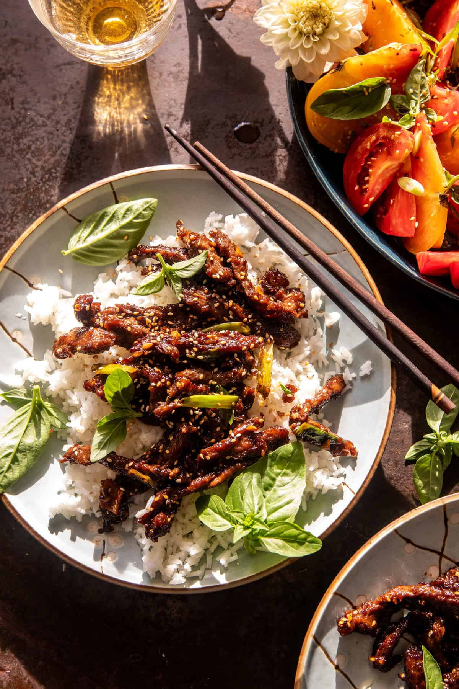

Crispy Mongolian Beef

About the recipe
20 Minute Crispy Mongolian Beef: the newest take-out-style dinner made at
home. Thinly sliced steak is cooked in a dark, sweet, and tangy sauce
until caramelized around the edges. It’s then served simply with steamed
rice and a fresh sesame basil tomato salad. The addition of butter and
ginger is the secret. This dish is salty, tangy, and sweet and has just
the right amount of spice. Simply delicious!
Ingredients
Tomato Salad
Method
-
To a large skillet, add the steak with cornstarch. Add the oil and cook
over medium heat until seared, about 5 minutes. Mix in the butter,
garlic, fresh ginger, and pickled ginger. Cook for 1-2 minutes, until
the garlic is fragrant.
-
Add the tamari, ginger juice, brown sugar, and scallions. Cook until the
sauce thickens slightly. Remove from the heat. Sprinkle with sesame
seeds.
-
To make the tomato salad, combine all the ingredients in a bowl, gently
tossing. Season with chilies to taste, and add lots of basil.
-
Serve the steak, tomatoes, and remaining sauce over bowls of rice. Top
with basil, if desired. Enjoy!
Back to index
Original recipe can be found
here, it's not actually mine.